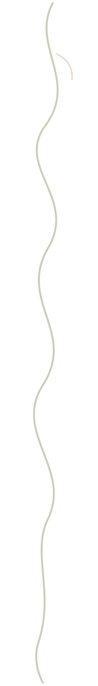
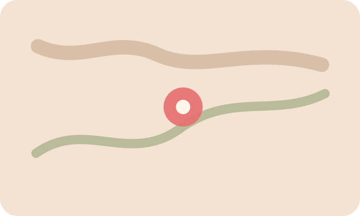

01
Découvrir l’aquarelle
Une entrée douce pour avancer sans pression, avec une proposition claire et adaptée.
Voir le parcoursÉtape 1 · L’envie de départ
Choisissez une envie, puis avancez simplement vers l’atelier, le matériel, le conseil ou le cadeau qui vous correspond.

Étape 2 · Choisir mon envie
Chaque carte ouvre une suite logique : un atelier possible, du matériel utile, un conseil adapté et une action simple.
Une entrée douce pour avancer sans pression, avec une proposition claire et adaptée.
Voir le parcoursUne entrée douce pour avancer sans pression, avec une proposition claire et adaptée.
Voir le parcoursUne entrée douce pour avancer sans pression, avec une proposition claire et adaptée.
Voir le parcoursUne entrée douce pour avancer sans pression, avec une proposition claire et adaptée.
Voir le parcoursUne entrée douce pour avancer sans pression, avec une proposition claire et adaptée.
Voir le parcoursUne entrée douce pour avancer sans pression, avec une proposition claire et adaptée.
Voir le parcoursÉtape 3 · Suivre un parcours conseillé
Chaque parcours réunit un atelier, une sélection de matériel et des conseils pour continuer à créer après votre visite.
Aquarelle botanique · 12 juillet · 2h30 · Débutant · Petit groupe · 4 places restantes · 65 €
Réserver l’atelierSet aquarelle débutant — 32 €
Carnet papier coton — 18 €
Pinceau souple — 12 €
Commencez avec peu de couleurs, un bon papier et un pinceau agréable. L’objectif est d’oser essayer, pas de tout maîtriser.
Dessin pour débutants · 19 juillet · 2h · Accessible à tous · Exercices guidés · 6 places · 45 €
Réserver l’atelierSet crayons graphite — 22 €
Carnet croquis — 18 €
Gomme mie de pain — 4 €
Le dessin commence par l’observation. Un matériel simple et bien choisi suffit pour reprendre confiance.
Atelier parent-enfant · 27 juillet · 1h30 · Famille · Création à emporter · 3 places restantes · 38 €
Réserver l’atelierKit créatif enfant — 24 €
Marqueurs acryliques — 24 €
Carnet créatif — 18 €
L’important est de partager un moment et de repartir avec une création dont l’enfant est fier.
Étape 4 · Ajuster avec un conseil humain
Chez Linia, le conseil fait partie de l’expérience. Vous pouvez poser une question avant d’acheter, avant de réserver un atelier ou pour choisir un cadeau.
Étape 5 · Passer à l’action
Les ateliers vous permettent de découvrir une technique. La boutique vous aide ensuite à continuer chez vous avec le bon matériel, choisi selon votre niveau.
 Aquarelle
AquarellePour tester avec une palette courte et lumineuse.
32 €Voir le produit Papier
PapierUn support stable pour progresser sans frustration.
18 €Ajouter au panier Famille
FamilleSimple, joyeux et prêt à utiliser à la maison.
24 €Voir le produitÉtape 6 · Offrir ou prolonger
Chaque début est légitime.
Le bon choix avant la vente.
Un cadre calme et attentif.
Utile, choisi, expliqué.
Linia accueille les curieux, familles, artistes et passionnés de Remouchamps, Aywaille, Sprimont, Theux, Spa, Liège et de la Vallée de l’Amblève.


Le parcours rend l’offre très simple à comprendre : envie, atelier, matériel, conseil, action.
La piste demande des contenus bien tenus à jour pour que les parcours restent crédibles.
À choisir si Linia veut être perçue comme un guide créatif, pas seulement comme une boutique ou un lieu.